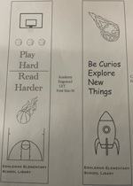

Jeremiah Anderson's Print Project |
||
| Home Photo Project Video Project Print Project Info Project | ||
|
 Student at Millersville University |
Our project involves the complete process of designing, printing, and finishing a custom bookmark specifically for the Central Manor Elementary School Library. The goal is to create a unique and visually engaging bookmark that not only reflects the spirit and identity of the school but also promotes reading and literacy among students. |
|
|
©: 2025 Jeremiah Anderson | ||